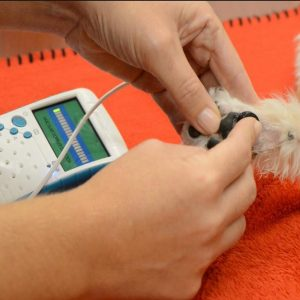

Veterinary Health Products Market Reigning Cats & Dogs
Increasing prevalence of pet insurance is a major growth factor of the global Veterinary Health Products market.The Global Veterinary Health Products Market is valued at $36.91 Billion in 2018 and expected to reach $71.02 Billion by 2025 with the CAGR of 9.80% over the forecast period.
Veterinary medicine, also called veterinary science has made many important contributions to animal and human health.Veterinary medicine is the part of medicines which are prevent, diagnosis and helpful in the disease, disorder and injury recovery in animal.The wide ranges of animals are created the scopes for veterinary medicines.
Veterinary medicines are useful in the treatment in wild as well as domestic animals.Veterinary healthcare market growth has been influenced by opportunities in all categories of animal health care products such as; pharmaceuticals, vaccines and medical feed additives.Rising affinity with pets and growing humanization are supplementing the veterinary healthcare market.
Segmentation
Global veterinary health products market report is segmented on the basis of product, industry and regional country level.Based on product, global veterinary health products market is classified as animal pharmaceuticals, vaccines, performance enhancers and feed additives.Based upon industry, global veterinary health products market is classified as pet, livestock and poultry.
The regions covered in this veterinary health products market report are North America, Europe, Asia-Pacific and Rest of the World.On the basis of country level, market of Veterinary Health Products is sub divided into U.S., Mexico, Canada, U.K., France, Germany, Italy, China, Japan, India, South East Asia, GCC, Africa, etc.
Key Players
Global Veterinary Health Products market report covers prominent players like Alpharma Animal Health, Adisseo France, BASF, Bayer, Boehringer Ingelheim, DSM, Elanco, Zoetis and others.
In the recent years, the pet ownership is increased and the awareness about animal health and vaccines is also increased.Animals play an inevitable role in families, where they are essentially considered as family members than pets.Numbers of families are choosing the pet insurance option.Vaccines for pets offer immunity against diseases, providing a protective barrier for humans from contacting diseases from their animals who are more likely to come into contact with wildlife.
These factors are fostering the veterinary health product market.However, side effects of
vaccines and high cost of veterinary health products may hinder market growth.In spite of that, the necessity of vaccines and their development are expected to supplement the growth of the veterinary healthcare market.Emerging countries are expected to generate new market opportunities over the forecast period.
Regional Analysis
North America is expected to dominate the global veterinary health product market within the forecast period owing to the high expenditure on animal healthcare in Canada and U.S.According to North American Pet Health Insurance Association, dogs accounted for 83.0% of insurance premiums while cats accounted for the remaining 17.0% in 2014.
Europe is followed by North America.Europe is leading in modern veterinary medicine and animal health product companies.For example, Europe created an annual turnover of approximately 6 billion Euros.Moreover, Europe records for second largest market due to animal-favored government policies and tax benefits for pet animals.Asia Pacific is an emerging market for the veterinary health product market due to the growing number of private veterinary clinics and awareness among people regarding animal welfare in this region.
[bsa_pro_ad_space ID = 4]
Share on Facebook Tweet Follow us
Posted On: 2020-03-27T00:00:00
Posted By: Carrie Smith




Content Date: 2020-03-27
Download Date: 2021-07-09
Document ID: L0C04EAD9